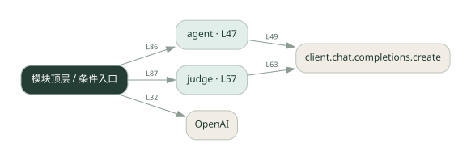

3-4 · 全课程第 44 节
评测运行器
041.py
源码快照 dff9562f69c8 · 静态解析 · 2026-09-10
01 / 要完成的事
遍历固定题集，调用被测 Agent 和裁判，统计正确率等结果。
02 / 为什么要做
修改 Agent 后需要同口径检查回归。
03 / 当前代码状态
仍有下划线占位表达式，源文件行号：62, 76, 99。相应路径在补完前不能正常执行。
存在外部服务或模型依赖；执行前需按源文件配置依赖和凭据，可能联网或产生 API 费用。 本次只做静态解析，没有运行练习，也没有替你填写或修改原代码。
04 / 调用图
打开大图 ↗实线：源码中的直接调用；虚线：函数引用/注册、动态调用或按方法名推断的候选。L 是调用所在源码行号。箭头不表示执行顺序或每次必经；分支、循环、异步调度及框架内部调用需结合源码。灰色是外部/未解析目标，橙色是动态分发；省略 print、len 和常规容器操作以减少干扰。孤立函数可能尚未接入。

先从 模块入口 出发，沿箭头找到本文件函数，再查看外部调用或动态分发。右侧调用清单保留所有静态调用点，能回到原文件逐行对照。
05 / 函数定位
| 函数 / 定义行 | 职责（源码注释） | 内部调用 |
|---|---|---|
agentL47 | 被测的 agent：直接问 LLM | client.chat.completions.create, resp.choices[动态键].message.content.strip |
judgeL57 | LLM-as-Judge：判断答案是否正确，返回 True/False | client.chat.completions.create |
这样做的优点
输入、期望和得分集中，便于比较版本。
代价与局限
小题集不能代表真实分布；裁判错误会直接影响分数。
适用场景
评测流程入门、少量回归样例。
不宜直接照搬
凭几题分数做高风险选型或效果承诺。
动手检验理解
增加一道模型容易答非所问的题，查看裁判是否只认关键词。
有未实现位置时先预测，再补齐验证。能启动不等于逻辑正确。
查看全部 16 个静态调用 / 引用点
| 调用方 | 目标 | 源码行 | 类型 |
|---|---|---|---|
| <模块入口> | OpenAI | 32 | 调用 |
| agent | client.chat.completions.create | 49 | 调用 |
| agent | resp.choices[动态键].message.content.strip | 54 | 调用 |
| judge | client.chat.completions.create | 63 | 调用 |
| <模块入口> | print | 81 | 调用 |
| <模块入口> | print | 82 | 调用 |
| <模块入口> | print | 83 | 调用 |
| <模块入口> | agent | 86 | 调用 |
| <模块入口> | judge | 87 | 调用 |
| <模块入口> | print | 91 | 调用 |
| <模块入口> | print | 92 | 调用 |
| <模块入口> | print | 93 | 调用 |
| <模块入口> | len | 95 | 调用 |
| <模块入口> | print | 100 | 调用 |
| <模块入口> | print | 101 | 调用 |
| <模块入口> | print | 102 | 调用 |